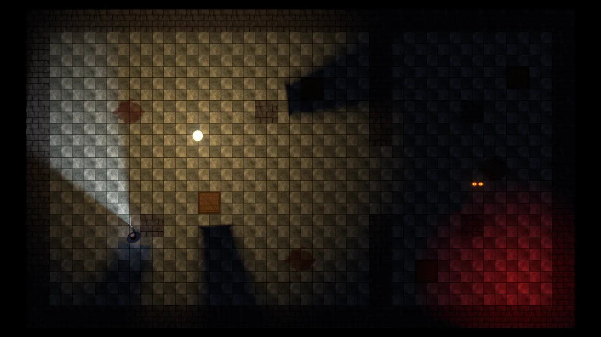
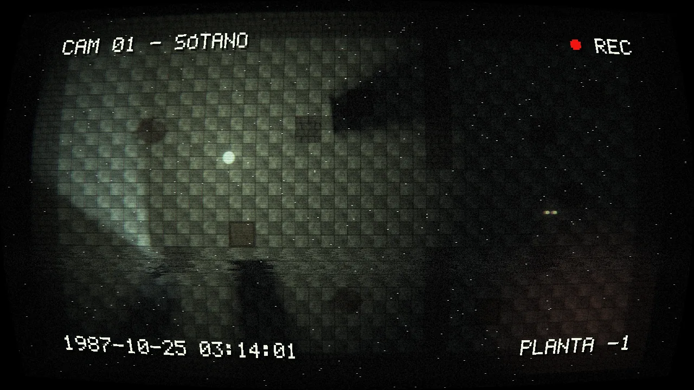

Luces 2D con sombras
En esta página
Luces para juegos 2D: bombillas que parpadean, linternas que apuntan con el ratón, un ambiente casi negro en el que solo se ve lo iluminado y sombras de las paredes, las cajas y los personajes. Funcionan con los Sprite y los Tilemap marcados como Iluminado (ver juegos-2d.md y mundo-2d.md), en el editor y en el juego.
La plantilla Terror 2D (Lua) (game/terror2d_lua) es un ejemplo pequeño con todo: un sótano de Tilemap a oscuras, una
bombilla que parpadea, un personaje con linterna, sombras de las paredes y las cajas, unos ojos que solo se mueven a
oscuras, el filtro de cámara de vigilancia (filtros-camara.md) y una
gotera con eco (audio.md).
| Sin el filtro de la cámara | Con el filtro «Cámara de vigilancia» |
|---|---|
 |
 |
Índice#
- Empezar en un minuto
- Luz 2D (Light2D)
- El ambiente: solo se ve lo iluminado
- Qué recibe la luz: sprites y Tilemap
- Sombras: Proyector de sombra 2D y Tilemap
- Parpadeo y pulso
- Máscara de capas
- Desde Lua
- En el editor
- Cómo se calculan las sombras y lo que cuestan
- Multijugador
- Límites
Empezar en un minuto#
- En los Sprite y Tilemap que deben recibir luz, pon Luz = Iluminado (luz 2D).
- Crea una entidad con Luz 2D (categoría 2D) de Tipo = Global (ambiente) e Intensidad 0,03: la escena se queda casi a oscuras.
- Crea otra con Luz 2D de tipo Puntual donde quieras una bombilla. Sube Parpadeo a 0,6 si quieres que falle.
- A las cajas y personajes que tapan la luz ponles Proyector de sombra 2D; al Tilemap de las paredes, Proyecta sombras.
Con alguna Luz 2D en la escena, los sprites iluminados ya no usan la luz del cielo ni del sol: el ambiente sale de las luces Global (sin ninguna, negro). Sin ninguna Luz 2D todo se ve como antes (la «luz 2D» de siempre: cielo, sol y las luces puntuales y focos 3D cercanos).
Luz 2D (Light2D)#
| Campo | Por defecto | Qué hace |
|---|---|---|
type (Tipo) |
Point |
Point: alrededor, hasta el radio. Spot: un cono hacia el eje X de la entidad (gírala para apuntar: una linterna). Global: la luz ambiente de todo |
color (Color) |
cálido | sRGB |
intensity (Intensidad) |
1 | 0 a 20 |
radius (Radio) |
6 | Hasta dónde llega (unidades del mundo) |
falloff (Caída) |
2 | Cómo baja con la distancia: (1 - d / radio) ^ caída. 0 = borde duro, 1 = lineal, 2 = suave, 4 = concentrada |
angle (Ángulo del cono) |
70 | Foco: apertura total en grados |
innerAngle (Ángulo interior) |
45 | Foco: dentro, luz entera; entre los dos, se difumina |
castShadows (Proyecta sombras) |
sí | La tapan los Proyector de sombra 2D y los Tilemap con «Proyecta sombras» |
shadowSoftness (Suavidad) |
0,35 | 0 = sombra dura. Más = penumbra más ancha lejos del objeto (como una fuente de luz más grande) |
shadowStrength (Fuerza de la sombra) |
1 | 1 = la sombra quita toda la luz de esta luz |
layerMask (Máscara de capas) |
todas | Capas de dibujo que ilumina (ver Máscara de capas) |
height (Altura) |
0,8 | Altura sobre el plano para el relieve de los mapas de normales (baja = relieve marcado) |
flicker (Parpadeo) |
0 | Bombilla vieja: 0 = fija, 1 = falla mucho (con apagones) |
flickerSpeed (Velocidad del parpadeo) |
9 | Cambios por segundo |
flickerSeed (Semilla del parpadeo) |
1 | Otra semilla, otro parpadeo; la misma, el mismo en todas las máquinas |
pulse (Pulso) |
0 | Sube y baja suavemente (una alarma, un piloto rojo) |
pulseSpeed (Velocidad del pulso) |
0,5 | Pulsos por segundo |
enabled (Encendida) |
sí | Apagada no ilumina (y no cuesta nada) |
La luz es 2D: cuenta la posición X e Y; la Z no importa (un sprite a cualquier Z la recibe igual).
El ambiente: solo se ve lo iluminado#
Las luces Global suman su color por la intensidad a todo lo iluminado de sus capas, sin radio ni sombras. Para un nivel
de terror, una Global azulada con intensidad entre 0,02 y 0,05: lo que no alcanza ninguna lámpara queda casi negro, pero
se intuye. Desde Lua: Light2D.SetAmbient(Color.new(0.05, 0.05, 0.08), 1) cambia la primera Global (o la crea).
Qué recibe la luz: sprites y Tilemap#
| Componente | Campo | Qué hace |
|---|---|---|
| Sprite | Luz: Lit |
Recibe las luces 2D, las sombras y el ambiente |
| Sprite | Luz: Unlit |
Se ve siempre con su color: interfaz en el mundo, carteles, ojos que brillan |
| Sprite | emission (Luz propia) |
Se suma su color sin luz: brilla en la oscuridad (1 = su color entero). Con el bloom del Entorno, además, resplandece |
| Sprite | receiveShadows (Recibe sombras) |
Sin marcar, la luz le llega aunque esté en una sombra |
| Sprite | normalMap (Mapa de normales) |
Relieve: una imagen de normales del mismo tamaño y corte que la del sprite. La cara que mira a la luz se ve más clara |
| Tilemap | Luz: Lit |
Los tiles reciben las luces y sombras como un sprite iluminado |
Sombras: Proyector de sombra 2D y Tilemap#
Proyector de sombra 2D (ShadowCaster2D, categoría 2D): la entidad tapa las luces con sombras.
| Campo | Qué hace |
|---|---|
shape (Forma) |
Auto: el colisionador 2D de la entidad si tiene (caja, círculo, cápsula, polígono o cadena); si no, el rectángulo de su sprite. Collider, Sprite (el rectángulo), SpriteAlpha (el contorno de lo que se ve de la imagen, sacado del alfa: para una imagen suelta, no una hoja con varios fotogramas) o Polygon para elegir |
points (Puntos) |
Con Polygon: los puntos locales, en orden |
selfShadows (Sombra propia) |
Sin marcar (por defecto), el sprite de la entidad recibe la luz que le llega: se ve la cara de la caja que mira a la bombilla aunque esté «dentro» de su propia sombra. Marcado, se oscurece entera |
Tilemap con Proyecta sombras: las celdas sólidas (las de los tiles que chocan, en las capas con colisión) tapan la luz, con los mismos contornos que usan las físicas 2D (sin juntas entre tiles). Con Sombra propia sin marcar, las paredes reciben la luz en la cara que mira a la luz (hasta una celda de fondo).
Parpadeo y pulso#
El parpadeo mezcla un ruido suave con apagones cortos, como una bombilla vieja o un fluorescente que falla. Es
determinista: con la misma semilla y el mismo reloj sale lo mismo. Dos bombillas con semillas distintas no fallan a la
vez. El pulso sube y baja suave (pulse es cuánto baja). Desde Lua: Light2D.Flicker(bombilla, 0.8, 10, 7) o
luz:Pulse(0.5, 1).
Qué reloj usan (el parpadeo, el pulso y Light2D.GetFactor):
- Con una partida en red (anfitrión, cliente o servidor dedicado): la hora del servidor, la misma que devuelve
Network.GetServerTime(). Así la misma bombilla está encendida o apagada a la vez en todas las pantallas, aunque cada jugador haya cargado la escena en un momento distinto. YLight2D.GetLightAten el anfitrión ve la luz que ven los jugadores: si un monstruo solo se mueve a oscuras, se para cuando la bombilla está encendida en todas las pantallas. - Sin red (un jugador, el visor Escena del editor): el reloj de la escena, como siempre.
- El reloj se lee una vez por frame: el dibujo y todas las consultas de los scripts de ese frame ven la misma luz.
No hace falta calcular el parpadeo a mano con la hora del servidor: basta con flicker y flickerSeed (iguales en todas las
máquinas porque se replican o están en la escena).
Máscara de capas#
layerMask dice a qué capas de dibujo (las de Ajustes del proyecto > 2D) llega la luz: el bit N es la capa N
(4294967295 = todas). Por ejemplo, una luz solo para los personajes: luz.layerMask = Light2D.LayerMask("Personajes"). Las
luces Global también la respetan (un ambiente para el decorado y otro para la interfaz del mundo).
Desde Lua#
Los campos del componente se cambian como los de cualquier componente (luz.intensity = 0.5, luz.enabled = false,
luz.color = Color.new(1, 0, 0)). Además:
| Función | Qué hace |
|---|---|
Light2D.Flicker(luz, cuanto, velocidad?, semilla?) |
Parpadeo de bombilla (0 lo quita). También luz:Flicker(...) |
Light2D.Pulse(luz, cuanto, velocidad?) |
Pulso suave. También luz:Pulse(...) |
Light2D.GetLightAt(posicion, conAmbiente?, capa?) |
Luz que llega a un punto (luminancia: 0 = oscuridad), con las sombras de los oclusores. false sin el ambiente |
Light2D.GetLightColorAt(posicion, conAmbiente?, capa?) |
El color de esa luz (sRGB) |
Light2D.IsLit(posicion, umbral?, capa?) |
true si le llega la luz de alguna lámpara o linterna (sin el ambiente) por encima del umbral (0,05) |
Light2D.SetAmbient(color, intensidad?) |
La luz ambiente (la primera Global; la crea si no hay). Devuelve el componente |
Light2D.LayerMask(capa, ...) |
Máscara de capas por nombre o número |
Light2D.GetFactor(luz) |
Multiplicador de ahora por el parpadeo y el pulso. También luz:GetFactor() |
luz es la entidad o su componente Light2D; posicion, un Vec2 o un Vec3.
Un monstruo que solo se mueve a oscuras (el de la plantilla, Monstruo.luau):
function Monstruo:Update(dt: number)
local p = self.entity.position
if Light2D.GetLightAt(Vec2.new(p.x, p.y), false) < 0.06 then
-- a oscuras: se acerca al jugador
local d = self.jugador.position - p
local largo = math.sqrt(d.x * d.x + d.y * d.y)
if largo > 1 then
self.entity.position = p + d / largo * (self.velocidad * dt)
end
end
endUna linterna que apunta al ratón (la de la plantilla, Jugador.luau): el foco es hijo de una entidad que se gira hacia el
punto del plano bajo el ratón.
local p = Camera.ScreenToWorld(Input.MousePosition(), camara.position.z - self.entity.position.z, camara)
local d = p - self.entity.position
cuerpo.rotation = Quat.Euler(0, 0, math.deg(math.atan2(d.y, d.x)))En el editor#
- Gizmos: el radio de las luces puntuales y el cono de los focos (con el cono interior, más tenue) al seleccionarlas; un círculo pequeño con rayos para las Global. Con un Proyector de sombra 2D seleccionado se dibuja la forma que tapa la luz.
- Botón de la luz en la barra del visor (sale en la vista 2D o con alguna Luz 2D en la escena): ver la escena con las luces y sombras o sin ellas (los sprites iluminados con su color), para colocar cosas a oscuras. Jugando, siempre con luces.
- La luz se ve en el visor Escena sin jugar (el parpadeo, quieto; se mueve con el reloj de la escena al jugar, o con la hora del servidor en una partida en red).
Cómo se calculan las sombras y lo que cuestan#
Cada luz con sombras tiene un mapa de sombras polar de una dimensión: 1024 ángulos alrededor de la luz con la distancia al oclusor más cercano en cada uno. Se hace en la CPU con los segmentos de los oclusores (los contornos de los Proyector de sombra 2D y de los Tilemap), mirando solo los que están cerca de la luz gracias a una rejilla; por cada segmento se rellenan los ángulos que tapa. Los mapas de todas las luces se suben como una textura (una fila por luz) y el shader de los sprites los lee: un punto está en sombra si está más lejos que el oclusor en su ángulo. La sombra suave sale de un filtrado de anchura variable (la penumbra crece con la distancia entre el punto y el oclusor, como con una fuente de luz grande), con muestras desplazadas por píxel (sin bandas).
Por qué esta técnica y no otras:
- El coste no depende de la resolución de la pantalla: depende de los segmentos que hay cerca de cada luz (unos cientos en un nivel de Tilemap).
- Los oclusores fuera de la pantalla también hacen sombra (una pared fuera de la vista tapa la luz que entra).
- Los mismos datos responden en la CPU a «¿está iluminado este punto?» (
Light2D.GetLightAt), igual en un servidor sin gráficos. - Una geometría de sombras por luz pediría varias pasadas de dibujo por luz y unas sombras suaves caras; un campo de distancias de la pantalla (SDF o JFA) pediría varias pasadas a pantalla completa por frame, recorrer el campo por luz y píxel, y perdería los oclusores fuera de la vista.
Medido en las pruebas (terror2d rendimiento, NVIDIA GeForce RTX 5060 Ti): 30 luces con sombras sobre un Tilemap de
200 x 100 (unos 4.200 segmentos): 0,2 ms de CPU para el mundo de las luces, 0,75 ms de CPU para los 30 mapas de
sombras y 0,14 ms de GPU para el frame entero a 1280 x 720 (0,10 ms sin sombras). Los números de cada ejecución quedan
en capturas-terror2d/rendimiento.json.
Multijugador#
Los campos principales de la Luz 2D (tipo, color, intensidad, radio, ángulos, sombras, parpadeo y encendida) y la luz propia
de los sprites se replican como cualquier campo Replicated. El parpadeo y el pulso van con la hora del servidor (ver
Parpadeo y pulso): con la misma semilla, la bombilla parpadea igual en todas las máquinas.
Light2D.GetLightAt funciona igual en el servidor dedicado (no necesita gráficos): úsalo allí para decidir si un monstruo
puede moverse.
Límites#
- Hasta 128 luces 2D encendidas a la vez y 64 con sombras (las demás iluminan sin sombras).
- Las sombras son de formas (colisionador, rectángulo o contorno del alfa del sprite, polígono o celdas del Tilemap): el contorno del alfa es uno por imagen y no sigue los fotogramas de una animación.
Light2D.GetLightAtusa sombras duras (sin la penumbra).- Los mapas de normales son para sprites (no para los Tilemap).
- Una luz dentro de un oclusor no ilumina nada (queda tapada por todos lados).